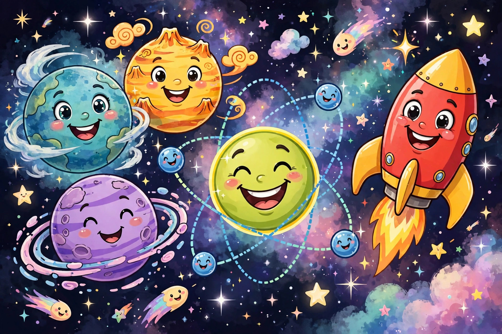

Science Jokes for Kids Ages 9–12

Science jokes are everywhere — and that's the problem. Every science-joke list on the internet repeats the same twenty classics, with no regard for who is reading. We read through 300+ science jokes from six kid-friendly lists and built a collection calibrated for ages 9–12: jokes that match what you're actually studying in school, organized by subject, with a workshop at the end so you can start inventing your own. Lab coats optional. Groaning mandatory.
Space jokes
- How do you organize a space party? You planet.
- Why did the sun go to school? To get brighter.
- What do planets like to read? Comet books.
- Why did the astronaut break up with his girlfriend? He needed space.
- What did Mars say to Saturn? Give me a ring sometime.
- Why can't you trust the moon? It's always going through phases.
- How does the moon cut its hair? Eclipse it.
Chemistry jokes
- Why can't you trust atoms? They make up everything.
- What did the biologist wear to impress their date? Designer genes.
- Why did the physics teacher break up with the biology teacher? There was no chemistry.
- What do you call an acid with an attitude? A-mean-o acid.
- Why are chemists great at solving problems? They have all the solutions.
- What do you call an educated tube? A graduated cylinder.
Biology jokes
- Why was the mushroom invited to every party? Because he was a fun-gi.
- What did one DNA strand say to the other? Do these genes make me look fat?
- What do you call a fish with no eyes? A fsh.
- Why did the cell go to the party? It had mitosis to do.
- How do biologists talk to their plants? They use cell phones.
- Why don't cells ever get lost? They follow the nucleus.
Physics and earth science jokes
- What did one volcano say to the other? I lava you.
- Why did the scarecrow become a successful scientist? He was outstanding in his field.
- What do you call a dinosaur with an extensive vocabulary? A thesaurus.
- What is a tornado's favorite game? Twister.
- What does a cloud wear under its raincoat? Thunderwear.
- Why did the germ cross the microscope? To get to the other slide.
Build your own science pun (workshop)
Science humor is almost entirely wordplay, which means it's the easiest joke category to DIY. Here's the formula:
- Pick a science word. Atom, cell, gene, planet, acid, fossil, orbit, nucleus — raid your textbook's glossary.
- Find an everyday word it sounds like. Gene sounds like "jean." Cell sounds like "sell." Mitosis sounds like "my toe slips" (okay, roughly).
- Swap it into a familiar phrase. "Designer jeans" becomes "designer genes." "Cell-fie" is "selfie" with biology. "I lava you" is "I love you" with a volcano.
- Test it on a friend. If they laugh within three seconds, it's a keeper. If they stare blankly, swap in a different science word and try again.
What success looks like: your friend groans and repeats your joke to someone else within the hour. A stolen joke is the highest compliment in science humor.
Which science is the punniest?
| Subject | Pun power | Why it works |
|---|---|---|
| Space | ★★★★★ | Planet names, "space," "star," "orbit" — endless material |
| Chemistry | ★★★★☆ | Element names and "solutions" do heavy lifting |
| Biology | ★★★★☆ | Gene/jean, cell/sell — perfect sound-alikes |
| Earth science | ★★★☆☆ | Volcanoes and weather deliver, rocks are a harder sell |
Pick the right joke for the moment
- Science class, teacher's in a good mood → chemistry one-liners. Teachers have heard them all and love them anyway.
- Stumping a friend → biology riddles ("what do you call a fish with no eyes?"). Make them work for it.
- Family dinner → space jokes. Everyone knows the planets; nobody feels left out.
- Science fair or project presentation → open with one joke from your topic's subject, then get serious. One joke = charming. Five jokes = the judges stop listening.
Done with science? Try the school jokes collection for classroom-approved laughs.